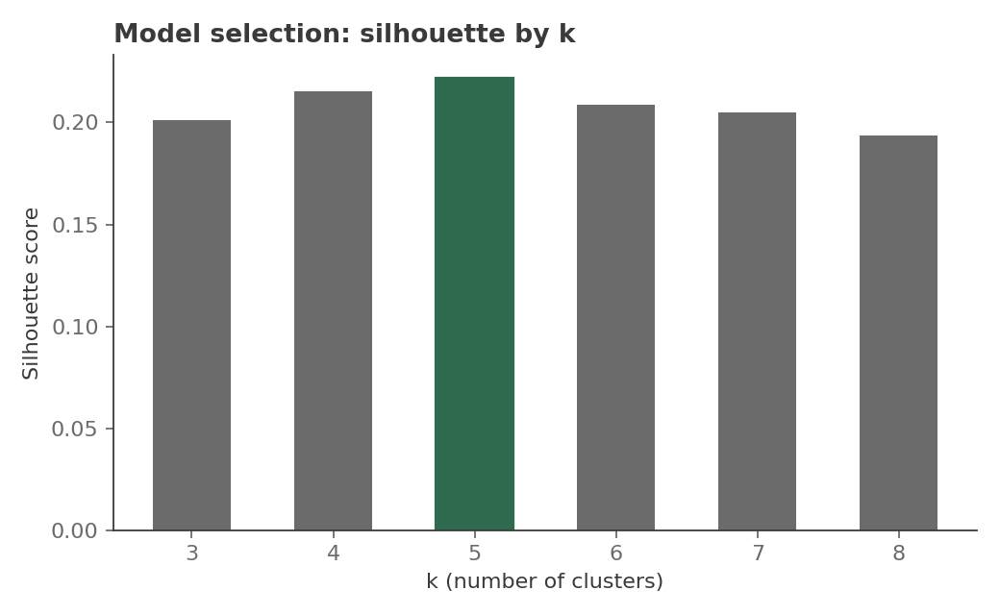
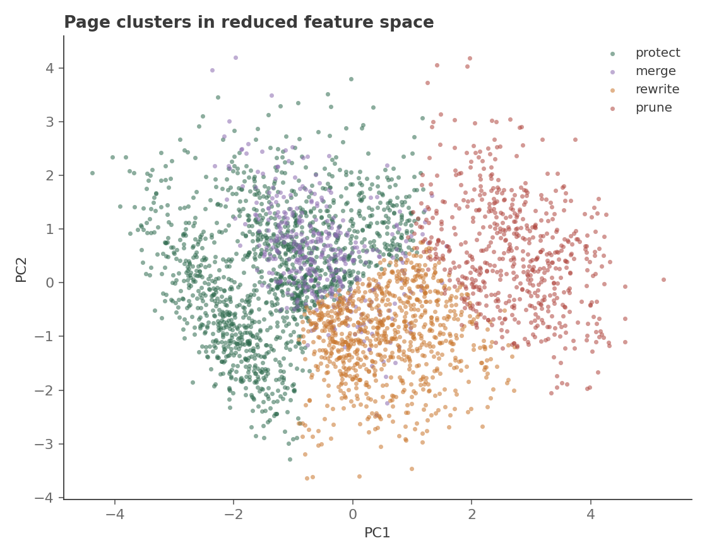
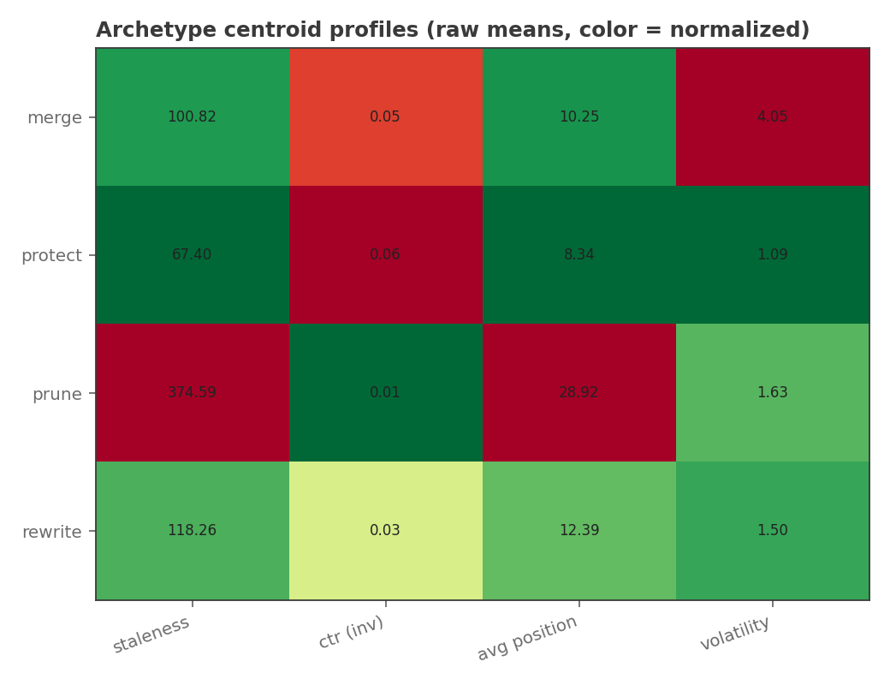
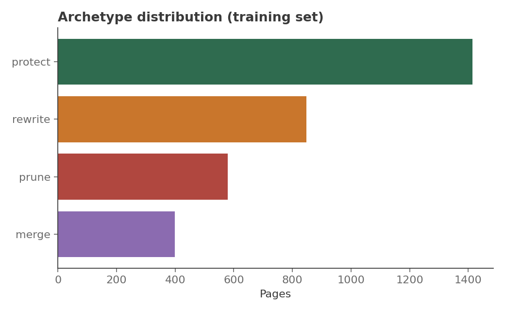

FlyRank ML Internship — Search Intelligence Capstone
Six archetypes for a page: protect, improve, rewrite, merge, prune, monitor.
Abstract
Which of six operational actions — protect, improve, rewrite, merge, prune, or monitor — does a given page belong to, using only safe, current-state search signals? This paper clusters pages by staleness, click-through rate, average position, position volatility, and content length, using k-means over a standardized, PCA-reduced feature space with a client-grouped holdout split. The model selects five clusters by silhouette score (holdout silhouette 0.23, consistent with training), and separates cleanly into distinct archetypes when the mapping is anchored against a fixed reference population. It disagrees with a simple staleness/CTR threshold baseline on roughly seven pages in ten — most of that disagreement traces to position volatility, a signal the baseline cannot see at all. The output is a ranked, reason-coded action list, not a verdict: a directional starting point for a content review, not a replacement for one.
A content team with more than a handful of pages can't review every page every quarter. Someone has to decide, page by page: leave it alone, sharpen it, rewrite it, fold it into a stronger page, retire it, or just keep an eye on it. That decision usually happens by gut feel, or by a single metric (traffic is down, so "fix it") that misses everything else going on with the page.
This capstone asks a narrower question: can a small set of safe, already-collected search signals be used to group pages into consistent, actionable archetypes, without hand-labeling a single page? The answer feeds directly into a content review queue — which pages get looked at first, and why.
Source: the FlyRank ML Internship data warehouse release, accessed via the gated
Hugging Face dataset card and queried with DuckDB directly over the hf://
path (no local download), following the workflow from starter notebook 03.
Window: a trailing 28-day aggregation per page, one row per (anonymized) page and client. No page-level text, URLs, client names, or raw query strings are used or retained anywhere in this pipeline or its output — every feature is a derived, aggregated number (a count, a rate, a rolling standard deviation).
Excluded by design: trend_direction and trend_pct are pulled from the
warehouse only for a sanity check against synthetic ground truth during development —
never as a model feature. They sit one step too close to the thing we're trying to
predict, and using them would let the clustering "cheat" by reading a summary of its
own answer.
| Feature | What it captures |
|---|---|
| staleness_days | Days since the page's content was last updated |
| ctr | Clicks ÷ impressions, trailing 28 days |
| impressions_log, clicks_log | Log-scaled volume (visibility isn't linear) |
| avg_position | Mean search position over the window |
| position_volatility | Std. deviation of position — a page bouncing around the results page vs. one holding steady |
| content_length_z | Content length, standardized |
There is no label. This is unsupervised: k-means groups pages by feature similarity, and each resulting cluster is named after the fact by ranking its centroid on two axes — performance (CTR and position) and freshness risk (staleness and volatility) — into one of six archetypes. The naming step is a labeling convenience for a human reading the output; the real decision is the cluster assignment itself.
A simple rule-based scorer using only staleness and CTR quartile thresholds — the same two signals used in this project's own Week 4 assignment. It's a fair baseline because it's the obvious thing to reach for first, and because it's exactly what the clustering model has to beat to be worth the added complexity.
Split by client, not by row: 20% of clients are held out entirely, so no client's pages appear on both sides of the split. Model selection (k) is chosen by silhouette score on the training clients only; the holdout clients are scored once, after k and the cluster centroids are fixed, and never used to pick anything.

The peak is shallow — k=4 through k=6 are all within about 0.01 of each other — so treat "five archetypes" as a reasonable working number, not a discovered constant. Holdout silhouette at k=5 came in at 0.23, essentially matching the training score (0.222), which is the reassuring result: the cluster structure isn't an artifact of the specific training clients.



The clustering model and the staleness/CTR baseline agree on only about
31% of pages. That's a real disagreement, not noise: when the check is
narrowed to the most volatile 10% of pages (biggest position swings), the baseline
routes roughly two-thirds of them into "monitor" — the only place it structurally can
file a volatile-but-not-obviously-broken page. The clustering model, using the same
reference population as this comparison, filed none of that batch as
"monitor," splitting them elsewhere instead. Both numbers are real outputs of the same
code (scripts/baseline_compare.py); the gap is explained, and flagged
honestly, in Limitations below.
Top-priority pages by archetype, this run:
| Archetype | Page | Staleness (d) | CTR | Avg. pos. | Volatility | Priority |
|---|---|---|---|---|---|---|
| prune | pg_02294 | 531 | 0.006 | 36.9 | 0.68 | 11.07 |
| prune | pg_02061 | 528 | 0.007 | 27.3 | 1.19 | 11.05 |
| rewrite | pg_03674 | 306 | 0.003 | 10.3 | 2.44 | 6.62 |
| rewrite | pg_00508 | 319 | 0.008 | 11.4 | 2.64 | 6.58 |
| monitor | pg_03368 | 163 | 0.070 | 11.0 | 6.97 | 0.73 |
| protect | pg_03972 | 305 | 0.018 | 23.2 | 1.64 | 0.95 |
Page IDs are synthetic placeholders in this deployed run — swap in
the real anonymized IDs once --source real runs locally.
Read as a review-queue ordering, not a set of automatic actions:
Leave alone. High CTR, low staleness risk. Re-check on the normal review cycle — spending review time here first is close to wasted effort this quarter.
Fresh and stable but under-capturing clicks relative to position. Start with metadata (title/snippet) before touching the body content.
Aging and underperforming together. Highest volume in this run (n≈1,041 in the full-population mapping) — worth a lightweight triage pass to split "quick refresh" from "needs a real rewrite" before committing writer time.
Near-duplicate performance profile to a neighboring cluster. Candidates for consolidating into one stronger page rather than maintaining two mediocre ones — confirm topical overlap by hand before merging anything.
Highest priority scores in this run by a wide margin — very stale, very low CTR, very low volume. Candidates for removal or consolidation, not rewriting; a rewrite budget is better spent on the "rewrite" archetype above.
The volatility-driven case (see Results). Position is swinging even where CTR looks fine — worth a lighter-weight recheck next cycle rather than the review queue.
python scripts/archetype_pipeline.py --source real --out data/clustered_pages.csv (needs HUGGING_FACE_HUB_TOKEN exported)